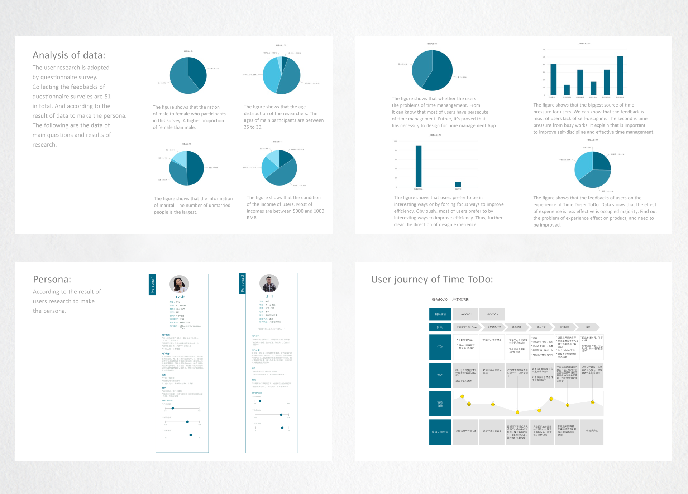
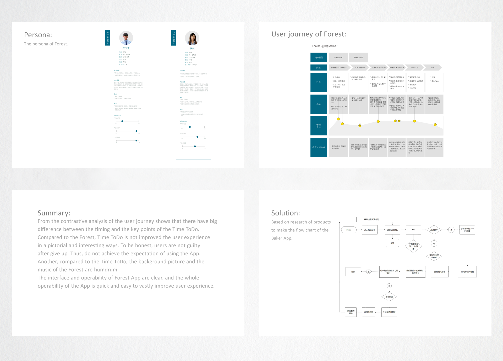
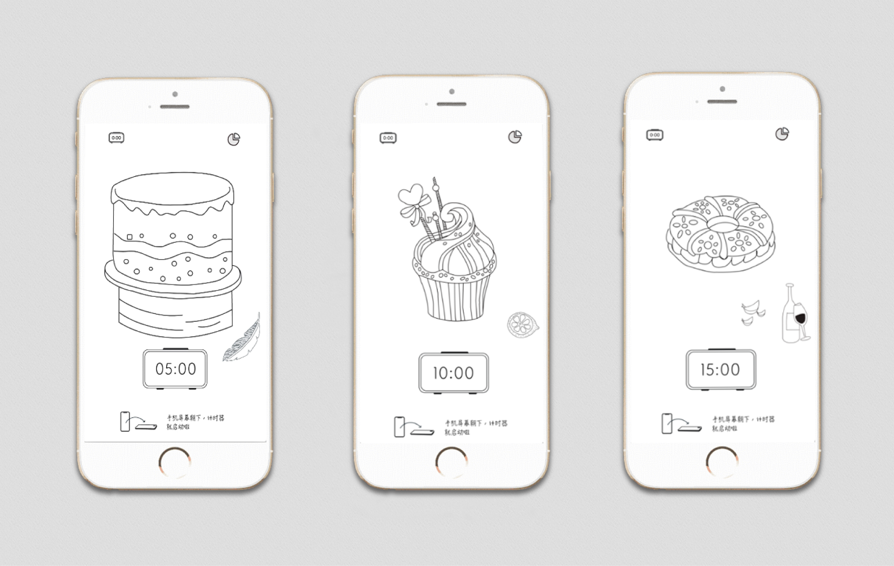
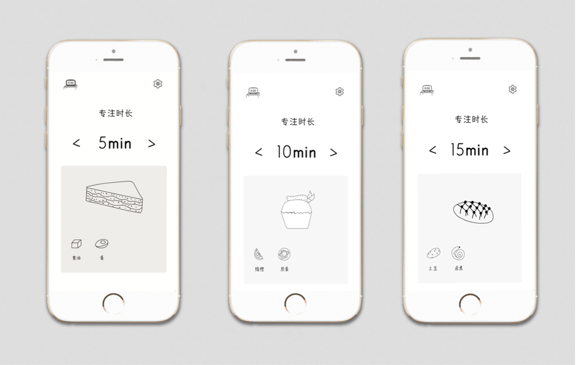
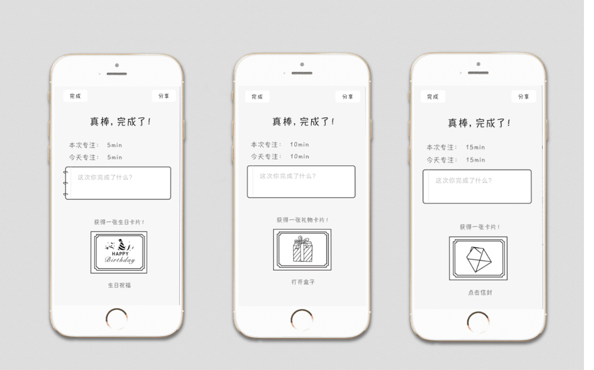
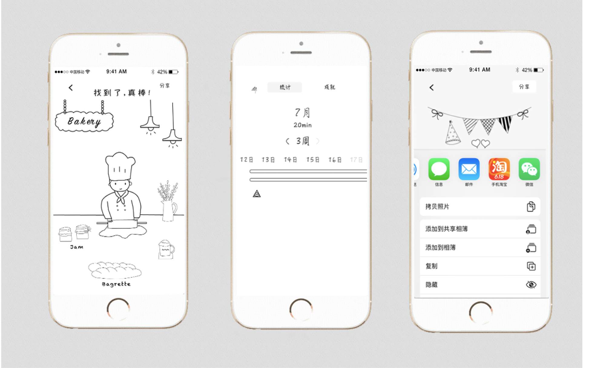

BAKER APP
Baker App is a time management App. It’s a product that based on Time Doser App to redesign. In modern society, because our lifestyle become more fast than before, and have a lot of work to deal with, in a twinkling, time passes quickly. However, there also leave many works to deal with. Sometimes, people become anxious due to time pressure.
Problem & Challenge
Will be solved the problem is : Help reduce time-related pressure.
Analysis & Solution
Product selection: I heard someone used a Time Doser App that
solved their the problem of time management, so I find the product
of Time Doser App.
Analysis of product: By doing user research to get the informations of
user experience and use of product. Accroding to the results of
research to find the disadvantage of product or the problems that
are improved to redesign. It will be more effectively help people
to improve the efficiency of time management than before. In the
meantime, the work and life will be more relaxed.
User research
Competitive analysis
    